Contexto
Procesos formativos a escala nacional dirigidos a fortalecer conocimientos en derechos humanos, equidad de género, masculinidades positivas y cuidados de personas adultas mayores en El Salvador.
INSTITUCIONAL · FORMACIÓN DIGITAL & OVAS
Tres programas nacionales, Objetos Virtuales de Aprendizaje y diseño editorial.
Virtualización pedagógica, desarrollo de OVAs interactivas y recursos educativos multimedia para el Instituto Salvadoreño para el Desarrollo de la Mujer (ISDEMU). Un ecosistema integral compuesto por tres procesos formativos especializados, materiales educativos impresos y entornos e-learning interactivos.
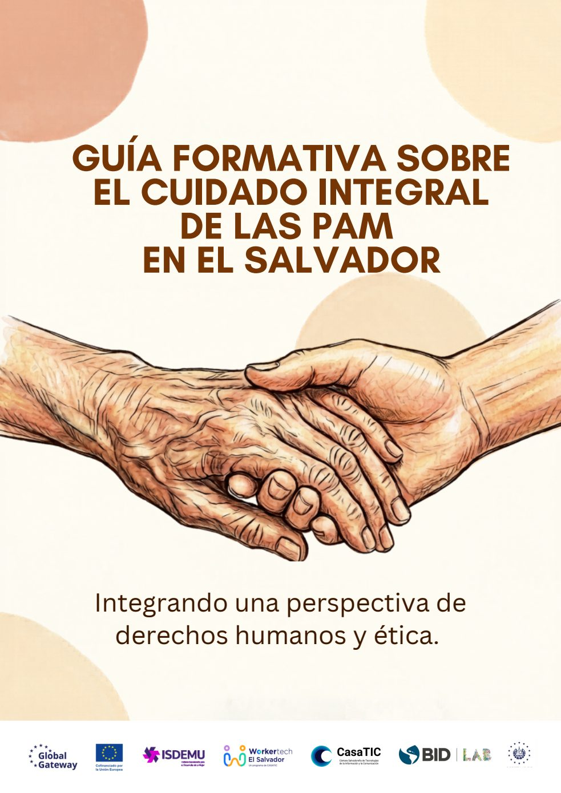
Página 1 de 51
01 / VISIÓN GENERAL
Procesos formativos a escala nacional dirigidos a fortalecer conocimientos en derechos humanos, equidad de género, masculinidades positivas y cuidados de personas adultas mayores en El Salvador.
Diseño instruccional, desarrollo de Objetos Virtuales de Aprendizaje (OVAs) en Articulate Rise 360 y Storyline, diagramación y diseño editorial de manuales pedagógicos, y creación de recursos gráficos interactivos. Además, planifiqué las jornadas presenciales y diseñé todos los recursos gráficos utilizados en ellas.
Tres procesos formativos diferenciados con recursos virtuales y presenciales, un manual de cuidados de 51 páginas maquetado para publicación, y módulos SCORM/HTML5 con analítica y retroalimentación activa.
02 / PROGRAMAS FORMATIVOS
Cada programa cuenta con una identidad pedagógica propia, recursos interactivos y materiales formativos adaptados a su público objetivo.
Se desarrolló un proceso formativo híbrido combinando recursos virtuales de aprendizaje con jornadas presenciales. El trabajo incluyó el desarrollo de Objetos Virtuales de Aprendizaje (OVAs), materiales educativos digitales y recursos de apoyo orientados a fortalecer conocimientos sobre los derechos de las mujeres, la igualdad, la no discriminación y el derecho a una vida libre de violencia.
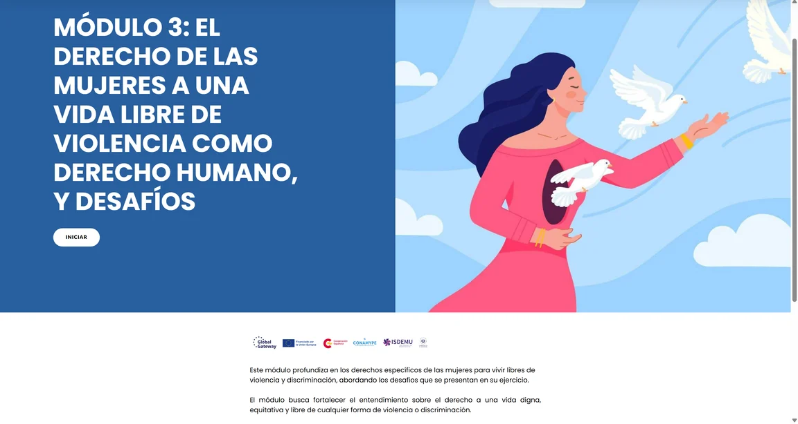
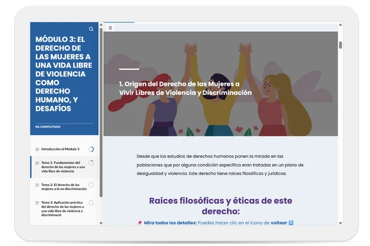
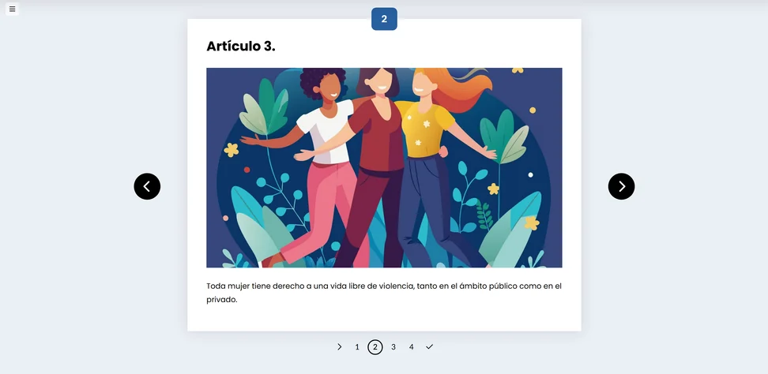
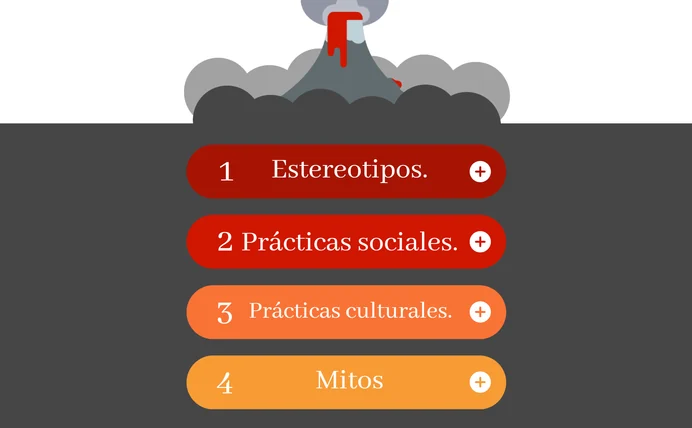
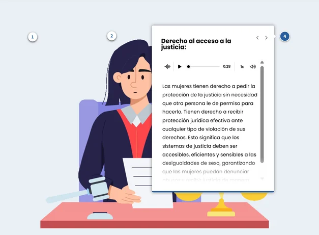
Se desarrolló un proceso formativo, combinando recursos virtuales con jornadas presenciales. El trabajo incluyó el desarrollo de OVAs, materiales educativos digitales y recursos de apoyo para fortalecer conocimientos sobre liderazgo, igualdad de género, corresponsabilidad, masculinidades y participación activa de los hombres en la construcción de relaciones más equitativas.
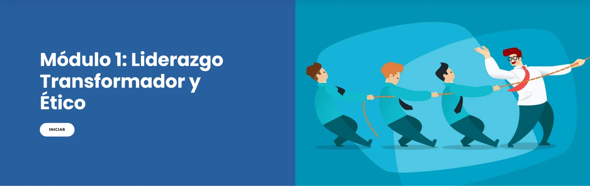
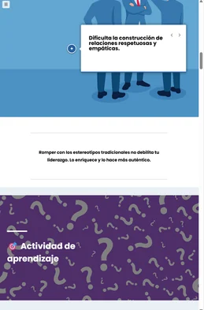
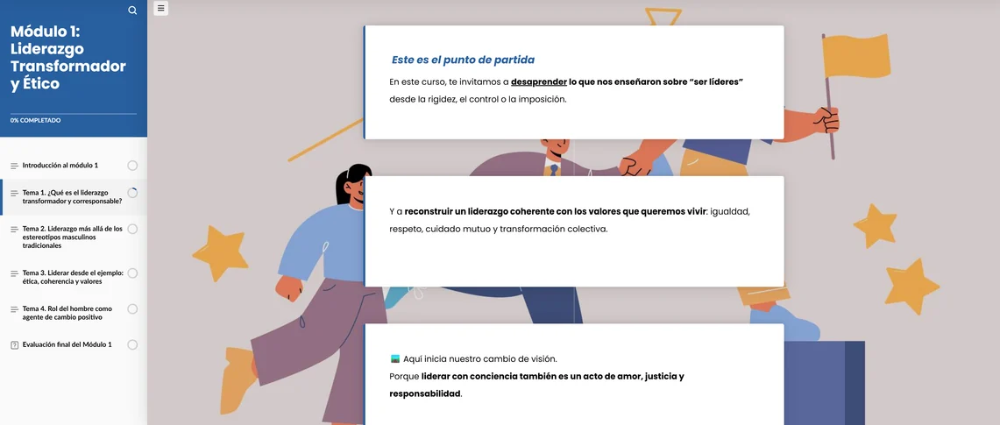
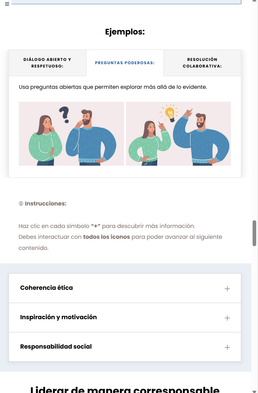
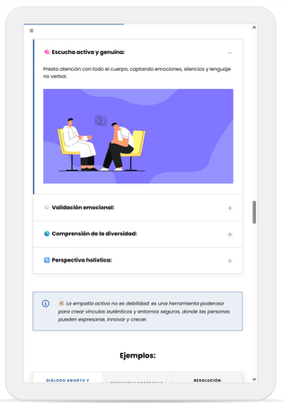
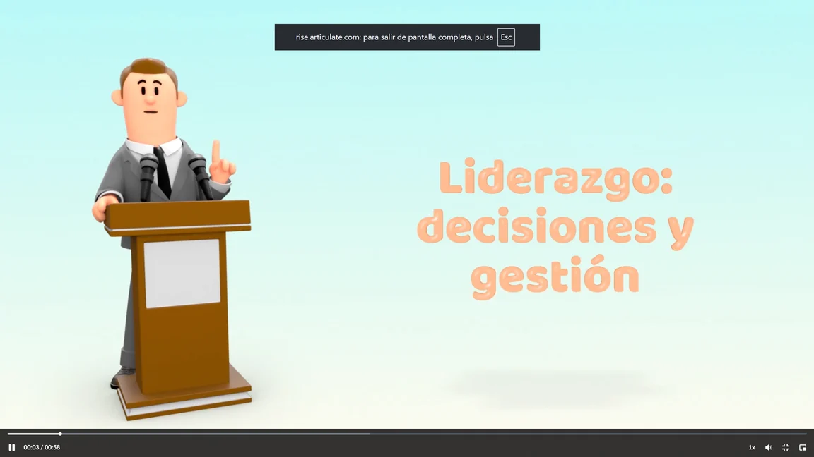
Se desarrolló un proceso formativo híbrido, con componente virtual y sesiones presenciales, orientado al fortalecimiento de capacidades en cuidados de Personas Adultas Mayores (PAM). El trabajo incluyó el desarrollo de recursos educativos digitales, organización de contenidos formativos y apoyo a la estructura del curso para facilitar el aprendizaje en modalidad presencial con apoyo de plataforma virtual.
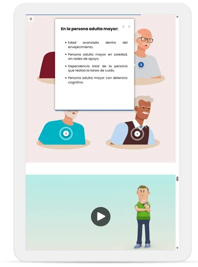
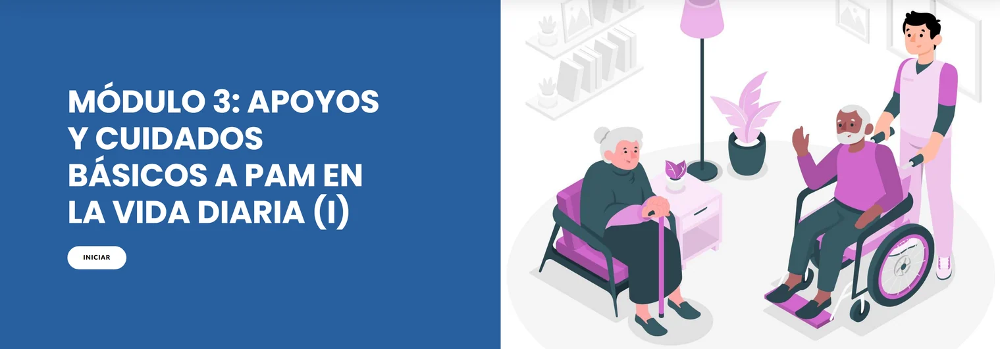
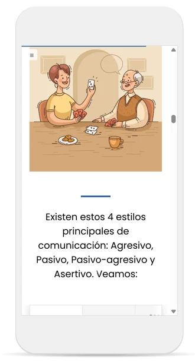
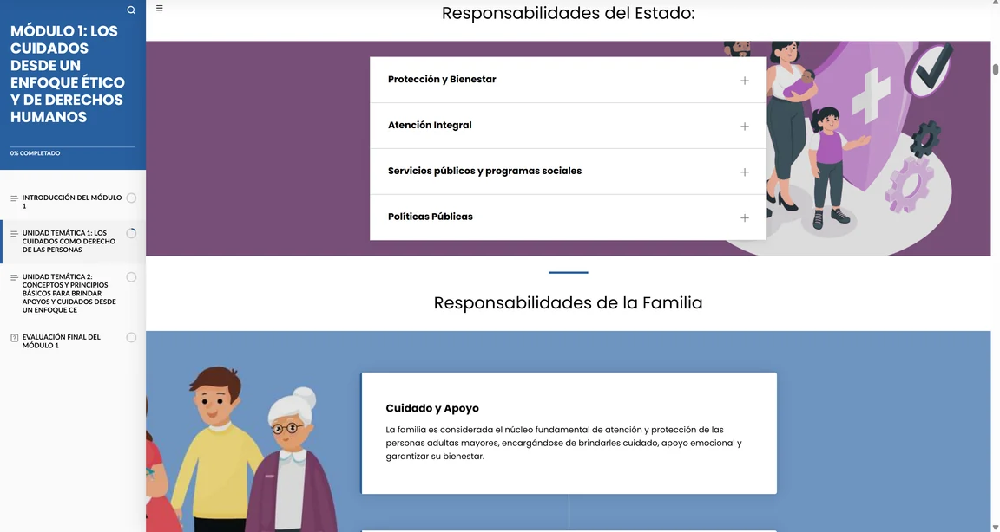
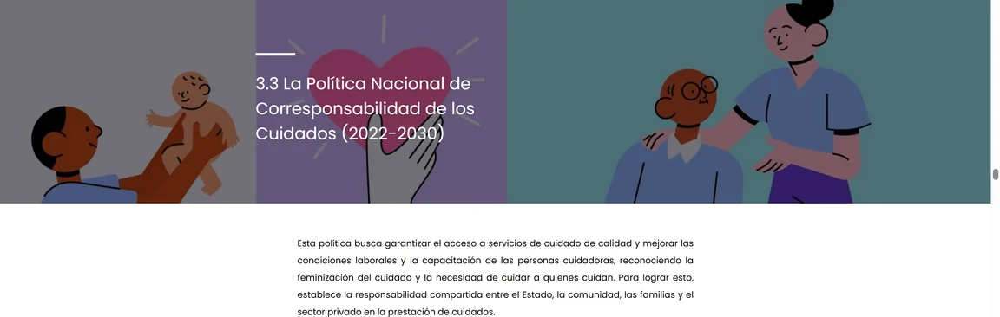
03 / EXPERIENCIA INTERACTIVA EN VIVO
Recorre directamente la experiencia e-learning construida en Articulate Rise 360. Incluye navegación multimedia interactiva, acordeones de conceptos, escenarios de toma de decisiones y evaluaciones formativas con datos de ejemplo.